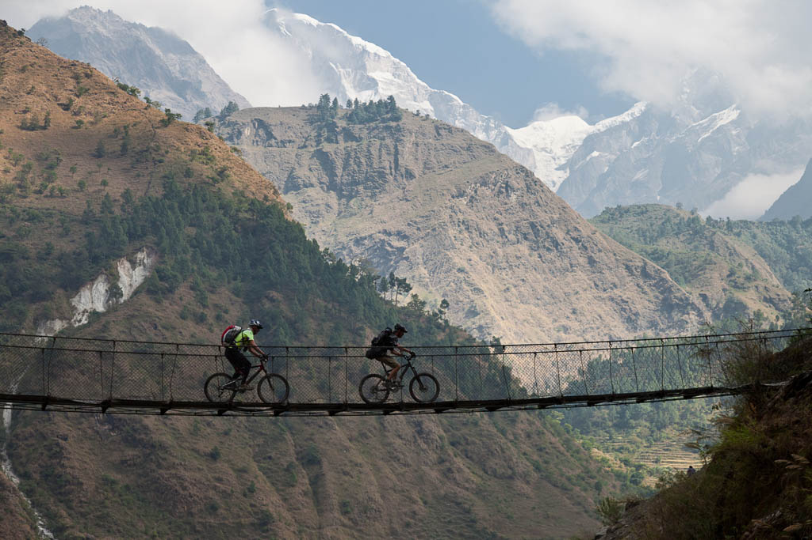

Explore The
Unexplored!!
Mountain Biking in Anaikatti üö¥‚Äç‚ôÇÔ∏è
Anaikatti, located about 30 km from Coimbatore, is a paradise for mountain biking enthusiasts, offering some of the most thrilling trails in the Western Ghats. With its diverse terrain, ranging from dirt roads and steep inclines to rocky paths and dense forests, Anaikatti is perfect for both beginners and experienced riders looking for a challenge. The trails wind through breathtaking landscapes, including misty hills, river crossings, and coffee plantations, making every ride a scenic adventure. One of the highlights of biking in Anaikatti is the opportunity to witness rich biodiversity—riders often spot elephants, deer, peacocks, and various exotic bird species while navigating the trails. The region’s cool climate, especially in the mornings and evenings, makes it ideal for outdoor activities. Apart from the adventure, Anaikatti offers a unique cultural experience, as it is home to indigenous tribal communities, giving visitors a chance to learn about their traditions and way of life. Riders can also explore nearby waterfalls and natural streams, making it a perfect spot for a full-day adventure. For safety, it is recommended to wear proper biking gear and travel in groups, as the terrain can be challenging. Several adventure clubs and bike rental services operate in the area, offering guided tours for those looking to explore the trails with expert guidance. Whether you are an amateur cyclist looking for a fun ride or a professional biker seeking an extreme off-road experience, Anaikatti has something exciting to offer.

Paragliding at Kovaikutralam ü™Ç
For those who have ever dreamed of soaring through the sky, paragliding at Kovaikutralam offers a once-in-a-lifetime experience with breathtaking aerial views of the Western Ghats. Located in the foothills of Coimbatore, Kovaikutralam is one of the best paragliding destinations in South India, known for its perfect wind conditions and stunning landscapes. The adventure begins with a short trek to the takeoff point, where certified instructors provide a detailed briefing on safety protocols and techniques. Once airborne, paragliders glide effortlessly over vast green valleys, cascading waterfalls, and dense forests, experiencing the exhilarating feeling of weightlessness. The smooth, steady winds in this region make it ideal for both beginners and advanced flyers. For first-time flyers, tandem paragliding is available, where an experienced pilot controls the flight while the participant enjoys the thrill of floating in the air. Experienced paragliders can take solo flights, soaring high above the hills and enjoying the serene beauty from above. Many adventure camps around Kovaikutralam offer paragliding training programs, making it an excellent destination for those looking to take up the sport more seriously. The feeling of flying over lush green landscapes with the wind rushing past is truly unparalleled, making this an adventure that should not be missed.

Rock Climbing at Dhoni Hills üßó‚Äç‚ôÇÔ∏è
Dhoni Hills, located about 15 km from Coimbatore, is an adventure seeker’s delight, offering some of the best natural rock climbing spots in the region. Known for its steep rock faces, rugged cliffs, and untouched natural beauty, Dhoni Hills provides climbers with an exhilarating experience. The rocky terrain consists of various climbing routes suitable for different skill levels, ranging from beginner-friendly slopes to advanced rock faces requiring technical expertise. As climbers ascend, they are rewarded with breathtaking views of the surrounding valleys, lush greenery, and even glimpses of the nearby waterfalls. The climb requires not just physical endurance but also mental focus and strategic planning to navigate the uneven surfaces and find the best grips. The area is also popular among trekkers, allowing climbers to combine their adventure with an enjoyable hike through dense forests filled with rich flora and fauna. The best time to visit Dhoni Hills for rock climbing is early morning or late evening when the temperatures are cooler, making the climb more comfortable. Safety measures such as harnesses, helmets, and ropes are a must, and it is advisable to go in groups or with trained guides. For those new to climbing, several local adventure groups offer training sessions and guided climbs. Whether you’re an experienced climber looking to test your skills or a beginner eager to try something new, Dhoni Hills promises a thrilling rock-climbing experience in the lap of nature.

Kayaking at Aliyar Dam üö£‚Äç‚ôÇÔ∏è
Aliyar Dam, located about 40 km from Coimbatore, is a stunning reservoir surrounded by the picturesque Anamalai Hills, offering an excellent spot for water-based adventure sports like kayaking. The calm and serene waters of the dam make it a perfect location for both beginners and experienced kayakers looking for a peaceful yet adventurous escape. As paddlers navigate through the vast expanse of the dam, they can enjoy the breathtaking views of lush green hills, floating clouds, and the reflection of the sky on the crystal-clear water. Kayaking at Aliyar Dam is not just about adventure—it is also a therapeutic experience, allowing visitors to disconnect from the chaos of city life and immerse themselves in nature. Early mornings and late afternoons offer the best conditions for kayaking, with calm waters and a cool breeze enhancing the experience. The dam is also a paradise for bird watchers, as it is home to various migratory and resident birds that can be spotted while paddling. Adventure seekers can rent kayaks from local vendors, with safety equipment provided to ensure a secure and enjoyable experience. Apart from kayaking, visitors can also explore the nearby Aliyar Park, go on nature walks, or relax by the water, making it a perfect destination for a day trip. The combination of adventure, tranquility, and scenic beauty makes kayaking at Aliyar Dam an unforgettable experience for nature lovers and thrill-seekers alike.

ATV Riding at Kovai Hills üèçÔ∏è
For those who crave speed and adventure, ATV riding at Kovai Hills offers an action-packed experience on rugged off-road tracks. Located within the Kovai Hills Sports Academy, this destination is designed for adventure enthusiasts who love maneuvering powerful All-Terrain Vehicles (ATVs) through challenging dirt trails, rocky landscapes, and muddy tracks. The well-designed circuit includes steep inclines, sharp turns, and obstacles that test a rider’s skill and control, making the experience both thrilling and rewarding. Kovai Hills is an ideal spot for first-time riders as well as experienced ATV enthusiasts, with professional instructors providing training and safety guidelines before the ride. The adventure center offers various types of ATVs, ranging from beginner-friendly models to high-performance vehicles for more extreme off-roading experiences. Riding an ATV through rugged terrain, kicking up dirt, and feeling the rush of adrenaline is a unique experience that cannot be matched by any other adventure sport. The facility is well-maintained, ensuring a safe environment for riders while still providing an exhilarating challenge. Visitors can also combine their ATV ride with other outdoor activities available at Kovai Hills, such as trekking, camping, or zip-lining, making it a perfect adventure getaway. Whether you’re looking for a solo thrill ride or a fun group activity, ATV riding at Kovai Hills promises an unforgettable and high-energy experience.